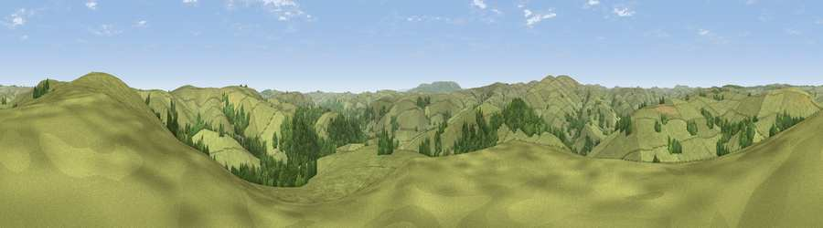

Viewpoint near Newcastle
#18571 in England · top 54% of its area beats it · near NewcastleWhere it is
The exact computed spot (SO 22775 79025). Click the marker for map links.
The view, rendered

A 360° render of this exact spot computed from the terrain model, tree cover and land cover — summer colours, afternoon light, calibrated against photographs of famous viewpoints. Real trees, hedges and buildings will differ in detail.
The panorama
Grey silhouette: terrain skyline in each direction (720 bearings, Earth curvature and refraction included). Dashed green: skyline with trees (+15 m) and buildings (+8 m) as obstacles. Blue strip: how far the ground is visible on each bearing.
Where the view opens
Wedge length = distance to the farthest visible ground on that bearing (vegetation-aware). Rings at 10, 25 and 50 km.
What fills the view
85% grassland · 15% woodland
Angular shares of the visible panorama (visual magnitude), not map area. Landscape diversity 0.20 (0–1 Shannon).
Key numbers
More beautiful places nearby
The staircase of upgrades: each row has a higher view potential than everything closer. Driving times are estimates from straight-line distance, calibrated against real road routing — check an actual route before setting out.
| Place | Direction | Drive | Score |
|---|---|---|---|
| Viewpoint near Newcastle | NE · 1 km | ~2 min | 57.6 |
| Garn Rock Hill | NNE · 2 km | ~5 min | 62.4 |
| Viewpoint near Newcastle | ENE · 4 km | ~9 min | 63.4 |
| Rock Hill | E · 5 km | ~11 min | 69.5 |
| Cwm-Sanaham Hill | SE · 6 km | ~12 min | 70.1 |
| Viewpoint c5772_6450 | N · 10 km | ~19 min | 72.5 |
| Viewpoint near Stowe | ESE · 10 km | ~20 min | 74.4 |
| Viewpoint near Brockton | ENE · 11 km | ~21 min | 74.9 |
52.40376, -3.13655 · source: screening · position refined by local search. Computed location — check access rights before visiting.